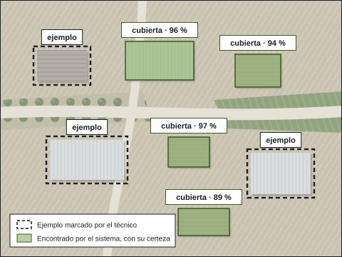

Teledetección con IA, a medida.
Nuestro propio software de inteligencia artificial busca en la imagen aérea lo que usted necesite encontrar. No es un programa cerrado: se entrena con ejemplos de su territorio y aprende de cada revisión.

Por qué decimos que es adaptativo.
No compramos un programa y lo aplicamos tal cual. Lo hemos hecho nosotros, y por eso podemos enseñarle cosas nuevas.
Aprende con ejemplos
Le enseñamos qué buscar marcando casos reales sobre la imagen. Con ellos se entrena una red neuronal propia.
Mejora con cada revisión
Los errores que confirma el técnico entran en el entrenamiento de la versión siguiente.
Un perfil por territorio
Cada municipio o zona tiene su configuración, sus imágenes y su cartografía. Nada está atado a un sitio.
Cualquier imagen aérea
Ortofoto oficial, servicios de mapas (WMS, WMTS) o imágenes propias en GeoTIFF, como las de nuestro dron.
Lo que se vea desde el aire.
Hoy trabaja para el Catastro. Si usted necesita encontrar otra cosa, la estudiamos, la entrenamos y medimos su acierto antes de entregarle nada.
En uso hoy
- Superficie construida que no consta en el Catastro.
- Ampliaciones de construcciones ya registradas.
- Piscinas sin declarar.
- Porcentaje construido de cada parcela frente a lo registrado.
A medida, con estudio previo
- Naves, cobertizos y construcciones auxiliares.
- Placas solares en cubierta y en suelo.
- Invernaderos y balsas.
- Movimientos de tierra y escombreras.
- Usos del suelo y cultivos.
Antes de empezar le decimos si lo que busca se distingue con la resolución de imagen disponible, y con qué acierto se puede esperar.
Cómo se entrena para algo nuevo.
- Nos dice qué buscaY dónde, y para qué lo necesita.
- Marcamos ejemplosCasos reales sobre imagen de su zona.
- EntrenamosLa red neuronal aprende de esos ejemplos.
- Medimos el aciertoEn zonas que no vio al aprender.
- Recorre el territorioParcela a parcela, con su grado de certeza.
- Revisa un técnicoCada alerta, antes de salir.
Medido, no prometido.
Probamos el sistema en sectores separados de los que usó para aprender, nunca al azar, y guardamos una zona intacta para la prueba final.
- En la última versión, sobre zonas que no había visto, el 93 % de lo que marcó como construido lo era, y encontró el 88 % de lo construido. confirmar si se publican las cifras
- Las piscinas, más difíciles por su tamaño, se revisan siempre una a una.
- Cada versión nueva se vuelve a medir antes de usarse.
Lo que recibe.
Alertas
Por referencia catastral, ordenadas por prioridad.
Excel
Un caso por fila, con su referencia y su resultado.
Capas SIG
En GeoPackage, para abrir en su programa de mapas.
Hojas de revisión
Con las imágenes de cada parcela y la decisión del técnico.
Una máquina que no decide sola.
El sistema propone; decide un técnico. Cada alerta se mira sobre la imagen antes de salir, y lo dudoso sale marcado como dudoso. Así funciona en el Catastro.
Lo que nos preguntan.
¿Puede detectar cualquier cosa?
Cualquier cosa que se distinga en la imagen aérea con la resolución disponible. Si algo es demasiado pequeño o no se ve desde arriba, se lo decimos antes de empezar.
¿Tengo que darle yo los ejemplos?
No. Los marcamos nosotros sobre imágenes de su zona. Si usted conoce casos concretos, ayudan.
¿Sirve para mi municipio?
Sí. Cada territorio tiene su propio perfil, con sus imágenes y su cartografía.
¿Qué imagen usa?
La ortofoto oficial más reciente o la de nuestro dron, si hace falta más detalle o una fecha concreta.
¿Qué necesita encontrar?
Cuéntenos qué busca y dónde. Le decimos si se puede, con qué imagen y qué acierto se puede esperar.
- emiliocontadorbrito@gmail.com
- Calle Matilde Tagle Ortiz, 28, 5.º D, 06006 Badajoz